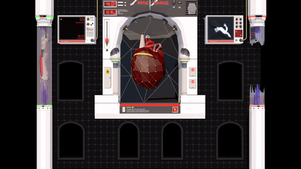
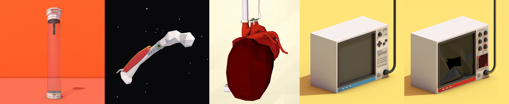

Marketing video for my 2016 thesis project in collaboration with the Rock & Roll Hall of Fame.
• • •
Vocaloid yayy ^◡^ I was very inspired by Vocalid music videos at the time and wanted to animate a clip from one of my favs. Warning! IA jupscare at 0:20??
• • •

3D graphics I contributed to an algorithmic VJ set for the 900th anniversary of the city of Köthen. These were projection mapped onto the façade of the university, and co-ordinated with RGB lights set up in each of the building's windows.
I took inspiration from futuristic medical machines, utilitarian East German technology, and PC components. For the heart, I was particularly inspired by a recent medical invention able to keep a heart beating outside the body. My labmates were likely less inspired, and more grossed out, but repeated viewing was crucial to getting the animation loop just right 💓

The heart, along with twisted veins modelled by a classmate, would still react to the beat, but also contain extra aspects controlled by an on-stage iPad. The heart could rise or sink through the background model and could also be transitioned between pure colour shading or glowing polygon outlines.
• • •
END TRANSMISSION